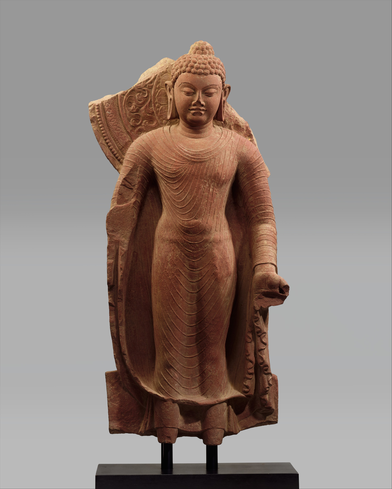

Mathura art feels like strength and spirituality carved into stone. The figures—whether Buddha, Jain Tirthankaras, or divine beings—are powerful yet calm, with a sense of inner peace. The romance here is spiritual and human at the same time. Unlike later refined styles, these sculptures feel more alive—broad shoulders, confident posture, gentle smiles. It’s like capturing the moment where human form meets divine energy.
Mathura art developed in Mathura, one of the oldest cultural centers in India. • Flourished during the Kushan period (1st–3rd century CE) • One of the earliest schools to depict Buddha in human form • Also created sculptures for Hindu and Jain traditions It became a major center for religious art and sculpture, influencing styles across India.
Mathura art is known for its distinctive sculptural style: • Red Sandstone Material Easily recognizable and widely used • Strong, Full-Bodied Figures Broad chest, muscular form, confident stance • Smooth Surface Finish Polished but not overly detailed • Symbolic Features • Smiling face → inner peace • Upright posture → strength and divinity • Minimal Clothing Detail Focus is on the body form rather than fabric
Mathura art was created by skilled ancient sculptors, often working under royal and religious patronage. • Artists were highly trained in stone carving • Worked for temples, monasteries, and religious institutions • Art was both religious and cultural expression